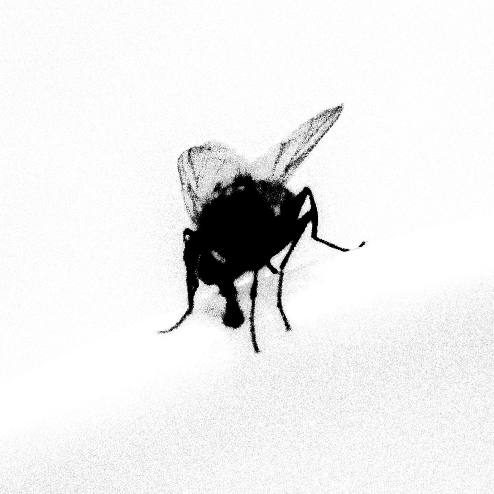
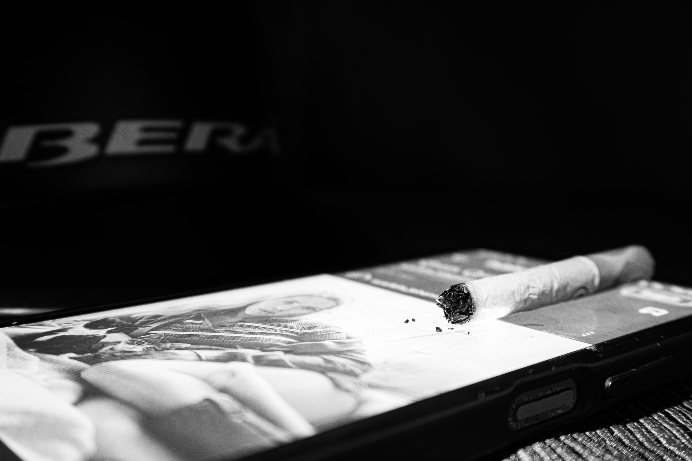

Hermes Sánchez
El peso del aire en la habitación, 2025
Vivir es urgente, y te estas tardando.

El peso del aire en la habitación, 2025
Vivir es urgente, y te estas tardando.

Caminando por ahí, 2025
Del encierro al asombro: la libertad de saber mirar.

Casco es pa pussies, 2024
Para el que no quiere usar casco.
Hola, soy Hermes Sánchez, fotógrafo venezolano nacido en 1999. Actualmente resido y desarrollo mi práctica profesional principalmente en Caracas.
Mi propuesta visual se fundamenta en la introspección y en la búsqueda de una identidad compartida con el espectador. A través de mis imágenes, busco transmitir la carga emocional y el peso de la cotidianidad, conectando de manera profunda con quien observa mi obra.
Me enfoco primordialmente en la fotografía artística y en la creación de proyectos autorales que abordan temáticas complejas y de gran sensibilidad social o personal.
Me formé profesionalmente en la Asociación Venezolana de la Comunidad Fotográfica y Afines (AVECOFA) en Caracas durante el año 2025. He participado en diversos proyectos y exposiciones locales.
Fotografo
Desde Caracas, Venezuela
Email: hermessamuelsanchez@gmail.com
Instagram: @sanchez__hermes
Para consultas de impresión o colaboraciones, utilice el formulario o comuníquese directamente por correo electrónico.